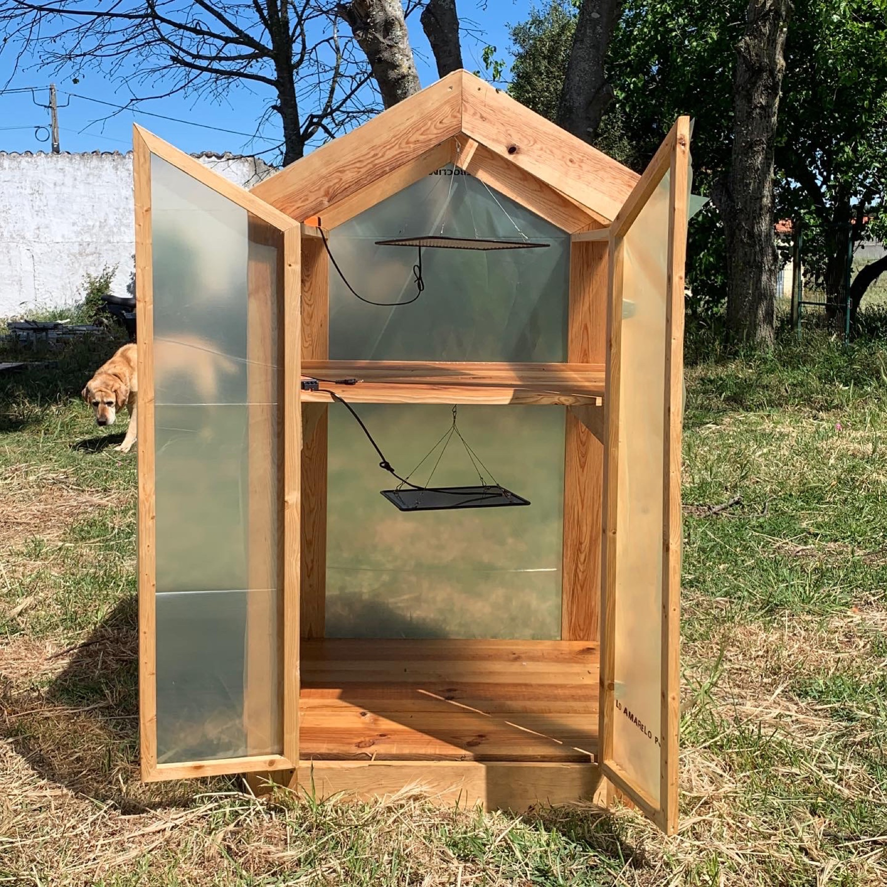
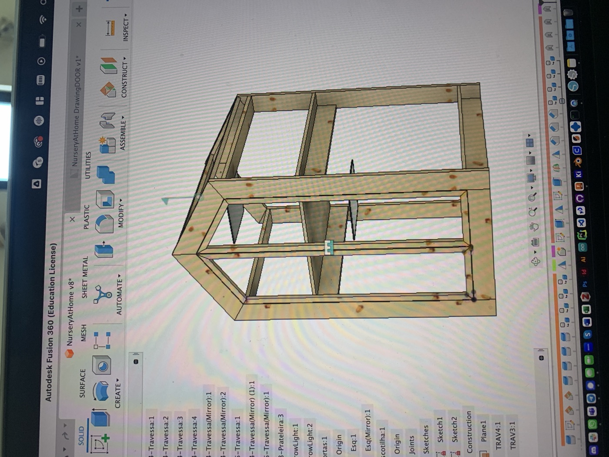
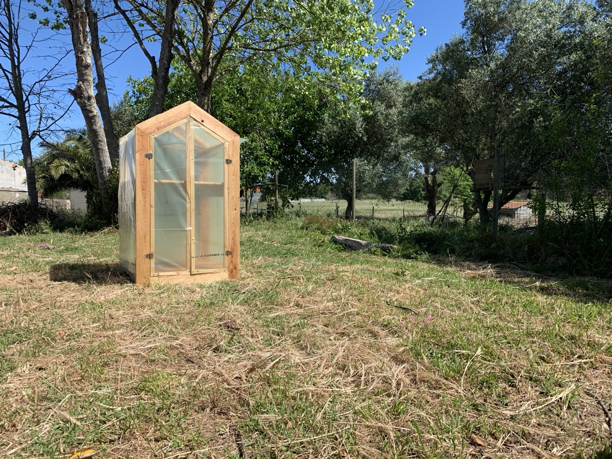

A small seedling nursery — a controlled greenhouse for propagation that senses climate and irrigation and reports to the shared GROUU stack. Structure in build; sensing, node and 3D in design.

The nursery is the V3 GROUU node for propagation: a small, controlled greenhouse that manages the seedling stage — stable warmth, humidity and watering — and reports to the shared stack. It descends from the archived V0 greenhouse but is reduced to the propagation stage and the current node/stack architecture. Concept and role are set; structure is in build, sensing and the node are in design.
Goal: take propagation — a bottleneck for a small grower — off manual care, and use it as a testbed for climate control on the shared stack. In the research process it is the climate counterpart to the WellBouy water node.
The nursery's sense → node → stack path, in the same shape as the other GROUU nodes. Drawn once the sensor set and radio are chosen.
The propagation frame and its layout, modelled in Fusion. A live 3D embed replaces the screenshot once the model firms up.

Intended set follows the GROUU sensor library — air temperature/humidity, substrate moisture, light — on a WiFi or LoRaWAN node, in a glazed propagation frame with a controlled hatch, powered from mains or a small panel. Models and calibration land here once selected.
| Part | Role | Source |
|---|---|---|
| Greenhouse frame + glazing | Propagation structure | — |
| Basic sensor node | Sensing + uplink (reused) | Basic node ↗ |
| Climate + soil sensors (TBD) | Air temp/humidity · substrate moisture · light | to select |
| Ventilation / irrigation actuation | Hatch + watering (later) | Actuator ↗ |
No firmware from scratch: the nursery node follows the completed basic sensor node (or its LoRaWAN peer), publishing to the same broker. Node-specific config and any UML land here once the node is chosen.
Concept and role are set and the structure is being built; sensing, the node and the 3D model are in design. Reproduction mirrors the other nodes — build the structure, flash the reused basic-node firmware, wire the sensors, point it at a broker — with detailed steps filled in as the sensor set and structure finalise.
